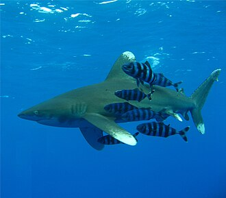

Хижі риби — риби, які поїдають інших риб, іноді жаб, мишей, а також інших тварин і птахів. У хижих риб великий рот озброєний численною кількістю гострих зубів. До категорії таких риб відносяться щука, судак, минь, окунь, білизна, сом, вугор, лосось та багато інших.
Хижі риби — риби, які поїдають інших риб, іноді жаб, мишей, а також інших тварин і птахів. У хижих риб великий рот озброєний численною кількістю гострих зубів. До категорії таких риб відносяться щука, судак, минь, окунь, білизна, сом, вугор, лосось та багато інших.
Хижі риби такі як акули і тунець становлять частину раціону людини, але вони мають особливість накопичувати значну кількість ртуті у їх організмах, якщо вони високо знаходяться у ланцюгу живлення, особливо хижаки найвищого рівня, через біологічне підсилення. Серед великих хижих риб найбільш відомі акули, 20 сімейств яких включає близько 250 видів. Для людини явно і потенційно небезпечні близько 50 їх видів, документально засвідчені атаки 29 видів. Практично важко відрізнити хижі види від нехижих.
Напад акули — подія, коли акула з якоїсь причини атакує людину — відбувається у світі регулярно, але не обов'язково із смертельним результатом. Не зважаючи на відносну рідкість нападів, страх перед ними виріс завдяки описам окремих випадків, таких як напад у Джерсе Шор в 1916 році, коли 4 людини загинули і 1 отримала каліцтва, а також літературним творам і фільмам жахів на зразок серії кінофільмів «Щелепи». Багато експертів вважають, що небезпека, яку несуть акули, сильно перебільшена, і навіть творець книги «Щелепи» покійний Пітер Бенчлі останніми роками перед смертю намагався розвіяти міф про гігантських акул-людоїдів. Насправді, всупереч поширеній думці, лише невелика кількість видів акул небезпечні для людини. Із понад 360 видів тільки 4 відмічені в значній кількості неспровокованих нападів на людей із смертельним результатом: акула біла, тигрова, тупорила і довгокрила акули. Попри те, що ці могутні морські хижаки спроможні нападати на людей, їхні фото- і відеозйомки проводилися незахищеними дайверами у відкритій воді. Наприклад, французький фільм Жака Перрена «Океани» містить кадри, де людина вільно плаває поряд з акулами. Більшість нападів океанічної довгокрилої акули не зареєстровані, на відміну від інших трьох видів, перерахованих вище. За результатами сучасної статистики довгокрила акула представляється як та, що рідко здійснює неспровоковані напади. Проте відомий цілий ряд атак акул цього виду, особливо під час Першої і Другої світових воєн. Океанічна довгокрила акула мешкає здебільшого у відкритому морі і рідко з'являється біля берегів, де реєструються більшість випадків.
Вгору